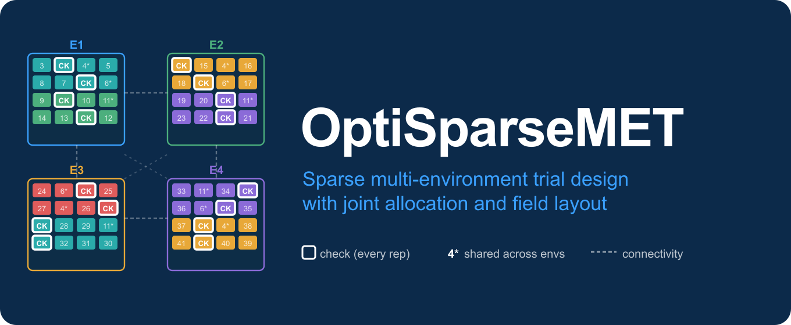

Overview
OptiSparseMET is an R framework for constructing sparse multi-environment trials (METs) that jointly addresses treatment allocation across environments and field design within environments – under shared statistical, genetic, and logistical constraints.
The package targets a structural challenge common to modern breeding programs: the number of candidate lines routinely exceeds what any single environment can accommodate, environments are heterogeneous rather than interchangeable, and seed availability imposes limits that purely theoretical designs ignore. Standard MET tools typically address one of these problems at a time. OptiSparseMET integrates all of them within a single workflow.
Conceptual Framework
Sparse MET design is a two-level problem and should be treated as such.
Level 1 – Across-environment allocation determines which treatments appear in which environments, how many times each treatment is replicated across the trial, and whether the resulting incidence structure preserves sufficient genetic connectivity for valid cross-environment inference.
Level 2 – Within-environment design determines blocking structure, spatial layout, replication within each environment, and local control of field heterogeneity.
These two levels are statistically linked. Allocation decisions constrain which field layouts are feasible within environments; field layout choices affect the precision with which allocation-level effects can be estimated. Optimizing each level in isolation is not equivalent to joint optimization. OptiSparseMET formalizes the link between them.
Statistical Foundations
Sparse testing identity
The theoretical basis follows Montesinos-Lopez et al. (2023), who formalize the resource identity underlying balanced sparse designs:
| Symbol | Meaning |
|---|---|
| Total number of treatments | |
| Number of environments | |
| Number of treatments per environment | |
| Number of environments per treatment |
Given fixed total resources , this identity makes the tradeoff between coverage breadth () and replication depth () explicit.
Allocation strategies
Two strategies are available, corresponding to M3 and M4 in Montesinos-Lopez et al. (2023):
| Strategy | Argument | Properties |
|---|---|---|
| M3-inspired | random_balanced |
Coverage-first stochastic allocation; guarantees every treatment appears at least once; tolerates unequal environment sizes |
| M4 BIBD | balanced_incomplete |
Enforces equal replication and equal environment sizes (slot identity ); pairwise co-occurrence is computed and returned but not enforced |
M4 – equal replication and equal environment sizes
The M4 method (Montesinos-Lopez et al. 2023) enforces two structural guarantees:
- Equal replication – every non-common treatment appears in exactly environments.
- Equal environment sizes – every environment receives exactly sparse treatments, so the resource identity holds exactly (, , where is the number of common treatments).
These are the guarantees that distinguish M4 from M3 in the paper. In plant breeding programs where thousands of lines are tested across a few environments, equal replication means every candidate is evaluated the same number of times – a fundamental fairness and precision requirement.
allow_approximate = FALSE (the default) enforces both conditions strictly. If the slot identity does not hold for the chosen dimensions, the function stops with a clear error before any allocation is attempted. Use check_balanced_incomplete_feasibility() to verify the slot identity first, or adjust and so that the identity holds. Construction proceeds via crossdes::find.BIB() when the crossdes package is installed, falling back to a greedy load-balanced constructor otherwise.
allow_approximate = TRUE relaxes the slot identity and allows minor replication imbalances. This is a fallback for exploratory use, not the primary mode.
Genetic connectedness
OptiSparseMET addresses genetic disconnectedness through three mechanisms: common treatments forced into every environment establish model-free cross-environment connectivity; family-based allocation distributes each family group across environments; and GRM/A-based allocation uses genomic or pedigree relationships to prevent genetic clustering.
Seed constraints
assign_replication_by_seed() takes a data frame of available seed quantities and a per-plot seed requirement and returns a replication plan that respects those constraints – making designs deployable rather than merely theoretically optimal.
Main Functions
Across-environment allocation
| Function | Description |
|---|---|
allocate_sparse_met() |
Distribute treatments across environments (M3 or M4) with enforced equal replication under M4 |
check_balanced_incomplete_feasibility() |
Verify the slot identity before attempting M4 allocation |
derive_allocation_groups() |
Derive grouping structure from family labels, GRM, or pedigree matrix |
Feasibility and capacity helpers
| Function | Description |
|---|---|
suggest_safe_k() |
Propose a safe n_test_entries_per_environment value |
min_k_for_full_coverage() |
Compute the minimum capacity for full treatment coverage |
warn_if_k_too_small() |
Non-fatal pre-flight capacity check |
Call suggest_safe_k() or min_k_for_full_coverage() before allocate_sparse_met() whenever trial dimensions change.
Seed-aware replication
| Function | Description |
|---|---|
assign_replication_by_seed() |
Partition treatments into replicated, unreplicated, and excluded roles based on seed availability |
Within-environment field design
| Function | Description |
|---|---|
met_prep_famoptg() |
Augmented, p-rep, and RCBD-type repeated-check block designs |
met_alpha_rc_stream() |
Alpha row-column stream designs for fixed-grid field deployment |
met_evaluate_famoptg_efficiency() |
A/D/CDmean efficiency evaluation for met_prep_famoptg() designs |
met_evaluate_alpha_efficiency() |
A/D/CDmean efficiency evaluation for met_alpha_rc_stream() designs |
met_optimize_famoptg() |
Random Restart optimisation for met_prep_famoptg() designs |
met_optimize_alpha_rc() |
RS/SA/GA optimisation for met_alpha_rc_stream() designs |
Pipeline and assembly
| Function | Description |
|---|---|
plan_sparse_met_design() |
End-to-end two-stage pipeline in a single call |
combine_met_fieldbooks() |
Stack environment-level field books into one MET field book |
Workflow
STEP 0 Verify capacity
suggest_safe_k() OR min_k_for_full_coverage()
|
STEP 1 Allocate treatments across environments
allocate_sparse_met()
|
STEP 2 Define replication based on seed availability
assign_replication_by_seed()
|
STEP 3 Build within-environment field designs
met_prep_famoptg() OR met_alpha_rc_stream()
|
STEP 4 Assemble the combined MET field book
combine_met_fieldbooks()Or run the entire pipeline in one call: plan_sparse_met_design().
Quick Start
library(OptiSparseMET)
treatments <- paste0("L", sprintf("%03d", 1:120))
envs <- c("E1", "E2", "E3", "E4")
common <- treatments[1:10] # 10 common treatments -> J* = 110
# Step 0: verify minimum capacity before allocating
# J=120, C=10, I=4: J*=110, min k* = ceil(110/4) = 28, min k = 38
# suggest_safe_k adds a buffer of 3 on top of the minimum
suggest_safe_k(treatments, envs,
common_treatments = common,
buffer = 3) # returns 41
# Before M4 allocation, verify the slot identity holds.
# With k=65, r=2, C=10: k*=55, J*=110. Identity: 110*2 = 4*55 = 220. Holds.
check_balanced_incomplete_feasibility(
n_treatments_total = 120,
n_environments = 4,
n_test_entries_per_environment = 65,
target_replications = 2,
n_common_treatments = 10
)
# feasible = TRUE: 110*2 = 4*55 = 220 (difference = 0)
# Step 1a: M3-inspired random balanced allocation
alloc_m3 <- allocate_sparse_met(
treatments = treatments,
environments = envs,
allocation_method = "random_balanced",
n_test_entries_per_environment = 41,
target_replications = 1,
common_treatments = common,
seed = 123
)
alloc_m3$summary$min_sparse_replication # every treatment in >= 1 environment
alloc_m3$summary$mean_sparse_replication
# Step 1b: M4 BIBD allocation -- slot identity must hold exactly.
# J*=110, I=4, r=2: k* = 110*2/4 = 55, k = 55+10 = 65.
# Slot identity: 110*2 = 4*55 = 220. Satisfied.
alloc_m4 <- allocate_sparse_met(
treatments = treatments,
environments = envs,
allocation_method = "balanced_incomplete",
n_test_entries_per_environment = 65,
target_replications = 2,
common_treatments = common,
allow_approximate = FALSE,
seed = 123
)
alloc_m4$summary$min_sparse_replication # 2: every sparse treatment in exactly 2 envs
alloc_m4$summary$max_sparse_replication # 2: equal replication confirmed
# Step 2: seed-aware replication plan
seed_df <- data.frame(
Treatment = treatments,
SeedAvailable = sample(10:100, length(treatments), replace = TRUE)
)
rep_plan <- assign_replication_by_seed(
treatments = treatments,
seed_available = seed_df,
seed_required_per_plot = 10,
replication_mode = "p_rep",
desired_replications = 2,
max_prep = 15,
shortage_action = "downgrade"
)
rep_plan$p_rep_treatments # treatments receiving 2 plots
rep_plan$unreplicated_treatments # treatments receiving 1 plot
rep_plan$excluded_treatments # treatments with insufficient seed
# Step 3: within-environment field design
# For augmented / p-rep / RCBD-type block designs:
design_E1 <- met_prep_famoptg(
check_treatments = c("CHK1", "CHK2"),
check_families = c("CHECK", "CHECK"),
p_rep_treatments = rep_plan$p_rep_treatments,
p_rep_reps = rep_plan$p_rep_reps,
p_rep_families = rep("F1", length(rep_plan$p_rep_treatments)),
unreplicated_treatments = rep_plan$unreplicated_treatments,
unreplicated_families = rep("F1", length(rep_plan$unreplicated_treatments)),
n_blocks = 4L, n_rows = 10L, n_cols = 12L,
seed = 123
)
# For alpha row-column designs:
design_E2 <- met_alpha_rc_stream(
check_treatments = c("CHK1", "CHK2"),
check_families = c("CHECK", "CHECK"),
entry_treatments = rep_plan$p_rep_treatments,
entry_families = rep("F1", length(rep_plan$p_rep_treatments)),
n_reps = 2L, n_rows = 8L, n_cols = 10L,
seed = 123
)
# Step 4: combine into single MET field book
met_book <- combine_met_fieldbooks(
field_books = list(E1 = design_E1$field_book,
E2 = design_E2$field_book),
local_designs = c(E1 = "met_prep_famoptg",
E2 = "met_alpha_rc_stream"),
replication_modes = c(E1 = "p_rep", E2 = "met_alpha_rc_stream"),
sparse_method = "random_balanced",
common_treatments = common
)
head(met_book[, 1:8])End-to-end pipeline
For standard workflows, plan_sparse_met_design() handles steps 1–4 in a single call using env_design_specs, a named list where each environment is mapped to its local design arguments. Set design = "met_prep_famoptg" or design = "met_alpha_rc_stream" in each spec:
env_specs <- list(
E1 = list(
design = "met_prep_famoptg",
replication_mode = "p_rep",
desired_replications = 2L,
max_prep = 15L,
shortage_action = "downgrade",
check_treatments = c("CHK1", "CHK2"),
check_families = c("CHECK", "CHECK"),
n_blocks = 4L, n_rows = 10L, n_cols = 12L
),
E2 = list(
design = "met_alpha_rc_stream",
check_treatments = c("CHK1", "CHK2"),
check_families = c("CHECK", "CHECK"),
n_reps = 2L, n_rows = 8L, n_cols = 10L
)
)
out <- plan_sparse_met_design(
treatments = treatments,
environments = envs[1:2],
allocation_method = "random_balanced",
n_test_entries_per_environment = 41,
target_replications = 1,
common_treatments = common,
env_design_specs = env_specs,
seed_info = seed_df,
seed_required_per_plot = data.frame(
Environment = envs[1:2],
SeedRequiredPerPlot = c(10, 10)
),
seed = 123
)
out$combined_field_book # full MET field book
out$environment_summary # per-environment design summary
out$efficiency_summary # efficiency metrics (when eval_efficiency = TRUE)Design Strategy Notes
Use random_balanced when environment capacities differ substantially, when exact BIBD parameters are not achievable, or when some stochasticity in allocation is acceptable. Unlike the original M3 of Montesinos-Lopez et al. (2023), this implementation guarantees every treatment appears in at least one environment before replication filling begins.
Use balanced_incomplete with allow_approximate = FALSE (the default) when equal replication is a hard requirement – every sparse treatment must appear in exactly environments. Verify the slot identity first with check_balanced_incomplete_feasibility(). The function stops with a clear error if the identity does not hold, so you always know whether the equal-replication guarantee was met. Install the crossdes package for guaranteed construction when available.
Use balanced_incomplete with allow_approximate = TRUE as a fallback when the slot identity cannot be satisfied for the chosen dimensions but you still want to attempt a balanced allocation. Some lines will receive more or fewer replications than . This is an exploratory mode, not the primary path.
Use met_prep_famoptg() for designs requiring repeated checks in every block, partial replication (p-rep), or RCBD-type structure. The optimizer met_optimize_famoptg() accepts A, D, and CDmean criteria.
Use met_alpha_rc_stream() for fixed-grid field deployments where spatial row-column control is a priority. The optimizer met_optimize_alpha_rc() supports Random Restart, Simulated Annealing, and Genetic Algorithm methods.
Use GRM/A-based grouping when genomic prediction is a primary objective, when family labels are too coarse to capture relevant genetic structure, or when related lines risk clustering into the same environments.
Include common treatments whenever environments are weakly correlated, when genetic connectivity cannot otherwise be guaranteed, or when a stable reference set is needed for cross-environment benchmarking.
Installation
Install from GitHub with vignettes (recommended):
install.packages("remotes")
remotes::install_github("FAkohoue/OptiSparseMET",
build_vignettes = TRUE,
dependencies = TRUE
)Install without vignettes for a faster install:
remotes::install_github("FAkohoue/OptiSparseMET",
build_vignettes = FALSE,
dependencies = TRUE
)For guaranteed exact BIBD construction via crossdes:
install.packages("crossdes")Documentation
Full documentation, function reference, and tutorials are available at:
https://FAkohoue.github.io/OptiSparseMET/
To read the vignette after installation:
vignette("OptiSparseMET-introduction", package = "OptiSparseMET")Citation
If you use OptiSparseMET in published research, please cite:
Akohoue, F. (2026).
OptiSparseMET: Sparse Multi-Environment Trial Design with Flexible Local
Field Layout. R package version 0.1.0.
https://github.com/FAkohoue/OptiSparseMETReference
Montesinos-Lopez O.A., Mosqueda-Gonzalez B.A., Salinas-Ruiz J., Montesinos-Lopez A., Crossa J. (2023). Sparse multi-trait genomic prediction under balanced incomplete block design. The Plant Genome, 16, e20305. https://doi.org/10.1002/tpg2.20305
Contributing
Issues, bug reports, and feature suggestions are welcome: https://github.com/FAkohoue/OptiSparseMET/issues